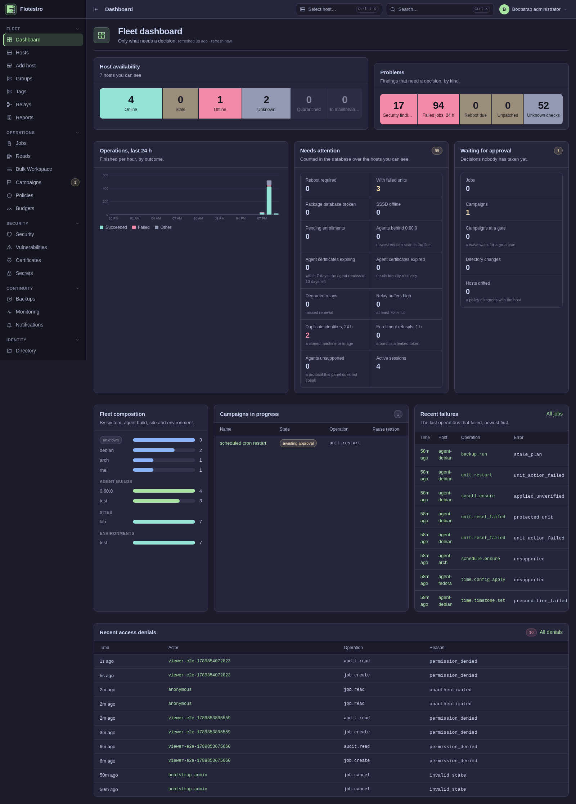

1. Introduction
Flotestro is fleet management for Linux servers: one panel that plans a change, has it approved, carries it out on the hosts and keeps the evidence. It manages Debian, Ubuntu, Fedora, RHEL and Arch hosts through an agent that runs unprivileged and hands the privileged part of a change to a root helper with a fixed repertoire.
What Flotestro is
An installation is one control plane, a PostgreSQL database and an agent on every managed host; a site whose hosts cannot reach the panel directly gets a relay of its own. The control plane is the panel, the API, the agent gateway, the enrollment endpoint, the scheduler, the campaign engine and the fleet's certificate authority in one binary. Nothing else has to be installed: there is no message broker, no configuration-management runner and no monitoring stack beside it.
What an operator does with it is always the same shape. They ask the fleet a question - which hosts have a security update waiting, which have a failed unit, which have drifted from a policy - and then order a typed operation against the hosts that answered. The host computes what the change would do, an approver reads that plan, the host applies it only if the plan still holds, and the panel records the order, the approval, the result and the verification as events that can be checked later without the database.

What it manages
The operations are grouped into modules, and every module works the same way: the agent reports the facts of that module as inventory, the panel judges them, and the changes in that area are typed operations with their own permission.
| Area | What the panel does with it |
|---|---|
| Packages | Plan, upgrade, install, remove, hold, repair a broken package database, upgrade the agent itself. Every change is a per-host plan approved by digest. |
| Services and processes | Start, stop, restart, reload, enable, mask, reset a failed unit; unit detail and journal; the process tree and signals. |
| Files and schedules | Managed files with versions kept on the host and a rollback to an exact earlier content; cron entries and systemd timers. |
| Network and firewall | NetworkManager, nmstate and netplan behind a connectivity watchdog that undoes a change that cuts the host off; firewalld, nftables and UFW; the resolver. |
| Storage | Mounts, filesystem check and resize, LVM, SMART, device wipe. |
| Containers | Docker containers, images, prune, events and logs; Compose projects deployed against a plan with resolved image digests. |
| Kernel and security | sysctl, kernel modules, SELinux mode, audit rules; versioned security checks with a fleet-wide remediation. |
| Time | chrony and timesyncd, the time zone, and a test of a time source before it replaces the one in use. |
| Identity | FreeIPA users, groups, HBAC and sudo rules, an access simulation, domain joins; local accounts and their SSH keys. |
| Certificates and backups | Scanning the host's certificates, rotating trust anchors, certmonger renewal; restic and borg runs, verification and restore. |
| Monitoring | CPU, memory, swap, filesystems, inodes and uptime sampled by the agent; the rules, alerts and silences live in the panel. |
| Vulnerabilities | The package lists the hosts report, correlated against the Debian, Ubuntu, Red Hat and NVD feeds. The panel reads the feeds; a managed host never does. |
The registry that defines them all is internal/opspec: in this
release it holds 128 typed operations, each with its permission, risk level,
lock class, timeout, output limit, campaign mode, offline policy, cancel
mode, rollback class and verifier. The operations
reference lists them one by one.
The doctrine
Six rules run through the whole product. They are not a statement of intent: each one is visible in the code, and most of them have a refusal code attached, because the way a rule is enforced is by saying no.
Unknown is never zero
A fact the agent could not determine is reported as absent, not as
0, not as false and not as an empty list that reads
like "nothing found". A module the host could not read is marked unread, and
the panel says so where the number would have been. A verdict that depends
on a module read too long ago is refused with
inventory_stale rather than computed from what
is stale; a vulnerability assessment with no feed says
feed_missing and states in as many words that zero findings
there means nothing could be checked, while feed_stale still
produces findings, because day-old data beat none.
The same rule decides the defaults. An operation the registry does not
know is treated as critical risk, not as the lowest one. A
duration that cannot be parsed keeps the default rather than switching a
safeguard off. An empty list of privileged groups is read as "the
installation said nothing", not as "no group is privileged".
Every operation is a typed contract
There is no "run a command" operation and the panel never opens a shell on
a host. Each of the 128 operations is a versioned contract: the payload it
accepts, the permission it needs, its risk level
(low, medium, high,
critical, destructive), the lock class it takes on
the host so two changes of the same kind cannot interleave, whether it may
run in a campaign, what it does when the host is offline, whether it can be
cancelled after it has started, how it is rolled back, and which verifier
reads the host afterwards to say whether the change is really there.
Risk is not decoration. An operation of critical or
destructive risk requires fresh authentication; a
destructive one also requires the operator to type the target's
name, and needs two approvals rather than one.
The host reports facts, the panel judges
An agent reports what it read: the units, the packages, the mounts, the interfaces, the certificates, the sudo policy. It does not decide whether any of that is good. Compliance, drift from a policy, security check results and vulnerability findings are all computed in the panel, from the reported facts and a versioned rule set, so that the verdict of a check can be changed, re-run over history and explained without touching a single host.
This is also why the vulnerability feeds are read by the panel and never by a managed host: a host has no route out, nothing to correlate against, and no business holding an opinion about itself.
A plan is approved by digest
For every change that has a plan, the host computes what would happen - the preconditions, the steps, the effects, the artifacts and the rollback - and reports it with a digest. The digest is the SHA-256 of the plan in RFC 8785 canonical JSON, taken over the content of the change alone: the description, the host identifier, the inventory revision and the expiry are stripped before hashing, so the same change on the same state always hashes the same.
The approver reads the plan and approves that digest. When the task
reaches the host, the host computes the plan again and compares. If anything
moved in between, it refuses with
stale_plan and changes nothing. A plan made by a
different planner version is refused with
replan_required; one older than its lifetime,
24 hours by default, with plan_expired.
Every refusal has a stable code
A refusal is part of the contract. The same situation always answers with
the same code - in the API, in the panel, in a campaign's target list and in
the audit trail - and the code is what a procedure, a dashboard or a script
keys on; the human wording of the message may change, the code does not.
Each code carries the stage it belongs to (admission, planning, dispatch,
helper, verify, reconcile, startup), whether it counts as a failure for a
campaign's threshold, and whether a retry can help at all:
never, automatic, after_change,
after_replan or read_state. The running panel
serves the whole guide at GET /api/v1/errors; it is also the
error reference of this manual.
Fail-closed
Where the product is unsure, it stops. A few examples of the same rule in different places:
- A control plane whose state directory does not belong to the database
it is pointed at refuses to start with
installation_state_mismatch. It never generates a fresh CA in place of a missing one - that would silently cut off the whole fleet. - A binary whose schema is older than the database stops with
schema_behind, and one whose schema is newer withschema_ahead. It will not serve a shape it misreads. - A root helper in
enforcemode refuses any change that does not carry a capability the panel signed for exactly this host, task, action and payload:capability_required. A capability whose nonce was used before is refused ascapability_replay. - A retention that would delete a reading a relay is still carrying is
refused, at start and on the settings screen alike, with
metrics_retention_too_short. - A write of a managed SSH key file that
sshddoes not actually read is refused withmanaged_file_not_readrather than writing keys that open nothing. - An identity provider with no group mapped to a role grants nothing: whoever signs in gets no permissions at all until a mapping says otherwise.
Note
Fail-closed cuts both ways, and the product accepts the cost. A host in
quarantine takes no operations and fetches no secrets; a campaign target on
such a host is marked ineligible rather than skipped quietly; an operation
whose result never arrived settles as
lease_expired and says the outcome has to be
read from the host before it is tried again - it does not assume the change
did not happen.
What Flotestro deliberately does not do
- Run arbitrary commands
- There is no operation that executes a command line on a host and no
shell session from the panel. What is not a typed operation cannot be
ordered. The root helper's repertoire is fixed at compile time; it refuses
anything else with
unknown_action. - Bring a monitoring stack
- No Prometheus, no agent-side exporter to scrape. The agent samples its
own host once a minute, the panel stores the samples and the quarter-hour
rollups, evaluates the alert rules and holds the alerts and the silences.
The panel does export
/metricsabout itself, for an installation that already has somewhere to put it. - Run the agent in a container
- The agent manages the host itself - its PID 1, its devices, its package
database - so it is a native package on every supported family. A container
that could do that job would be a
--privilegedcontainer with nothing isolated about it. The control plane, the relay, the admin tools and the air-gapped package repository are images. - Put secrets in a task
- A task never carries a secret value. The host fetches what it needs under a short lease, from the gateway, over its own mTLS session, and the panel records that it was fetched. A file version whose content came from the secret store is reported without a checksum, so that naming it in the panel cannot leak a fingerprint of the value.
- Export its own database
- There is no dump route and no backup button. Backups are taken with the
PostgreSQL tools, and the admin-tools image exists so that the panel's host
does not need a
pg_dumpof the right major version. - Pull a support bundle off a host
- Nothing leaves a host by itself. A bundle is made on the host by an explicit command, written to a file the operator names, and scanned before it is written: a bundle containing a private key or a bearer token is refused outright.
- Publish a moving version
- No
latest, nostablealias, no truncated0.60tag for the images: only the full version, which is never rewritten, and a commit tag for diagnostics. A pre-release goes to atestingchannel that a host asking forstablenever reads. - Decide for the operator
- The panel does not upgrade a fleet on its own, does not open a
maintenance window on its own and does not delete history on its own. The
audit retention defaults to keeping everything forever; shrinking a
monitoring retention is refused with
metrics_retention_shrink_unacknowledgedunless the request says in its body that the data loss is accepted.
Who uses it
Permissions are granted to roles, roles are granted to groups of the identity provider, and every grant is scoped by site and environment. The six roles are:
| Role | What it is for |
|---|---|
viewer | Reads the fleet: hosts, inventory, jobs, campaigns, and the plans of a change without ordering one. |
auditor | Reads the state of the system as evidence: the audit trail, the metrics, the protective state of a host and the results of its checks. |
operator | Orders operations and runs campaigns within their scope. |
approver | Approves what an operator ordered. In a production environment the approval has to come from somebody else. |
identity_admin | Manages the directory, the local accounts and their keys, but does not run operations on hosts. |
platform_admin | The installation itself: settings, the fleet CA and its rotation, principals and group mappings, the lifecycle of a host. |
Two permissions are deliberately kept apart from each other:
accounts.privileged_groups, which is needed to put an account
into a group that is root by another name, belongs to the platform
administrator, while making the account at all belongs to the identity
administrator. Granting the rights and granting the account are two halves
of one decision, and the product makes two people hold them.